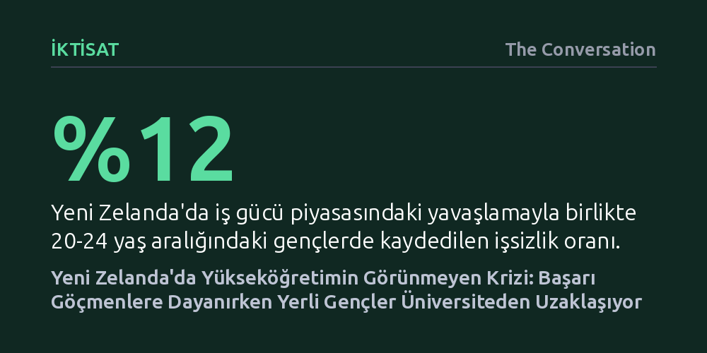

IKTISAT · The Conversation · 2026-10-13
OECD raporlarında başarılı görünen Yeni Zelanda yükseköğretimi, büyük ölçüde nitelikli göçmenlerin diplomalarına dayanırken yerli gençlerin eğitime katılımı ve kamu bütçesi hızla geriliyor. İstihdam piyasasının yavaşlamasıyla üniversite yerine erken işe yönelen gençlerin işsizlik oranı yüzde 12'ye fırladı.
Manşet eğitim verilerinin nitelikli göçle yanıltıcı bir başarı tablosu çizebileceğini, gençlerin eğitime katılımını artırmak içinse genel harç muafiyetlerinin değil erken dönemdeki yapısal eşitsizliklerin çözülmesi gerektiğini gösteriyor.

Ekonomik İşbirliği ve Kalkınma Örgütü’nün (OECD) her yıl yayımladığı Bir Bakışta Eğitim (Education at a Glance) raporu, gelişmiş ülkelerin eğitim göstergelerini kıyaslarken Yeni Zelanda’ya genellikle geçer not veriyor. 2026 yılı raporuna göre, ülkede 25 ila 64 yaş aralığındaki yetişkinlerin yüzde 44’ü yükseköğretim mezunu ve bu oran OECD’nin yüzde 43 olan genel ortalamasıyla neredeyse birebir örtüşüyor. Üstelik üniversite mezunu gençlerin işsizlik oranı da yüzde 3 ile OECD genelinin (yüzde 5) belirgin biçimde altında seyrediyor. İlk bakışta her şey yolunda görünse de bu manşet rakamlar, yerel gençlerin beceri ve eğitim düzeyine dair kaygı verici bir tabloyu gizliyor.
Yeni Zelanda, nüfusuna oranla gelişmiş dünyadaki en büyük göçmen topluluklarından birine ev sahipliği yapıyor; çalışma çağındaki yetişkinlerin üçte birinden fazlası ülke dışında doğmuş durumda. Ülkeye gelenlerin büyük kısmı nitelikli göçmen programlarıyla kabul edildiği için zaten yüksek eğitim düzeyine sahip kişilerden oluşuyor. Eğitim Bakanlığı verilerine göre, Yeni Zelanda’da yaşayan göçmenlerin yüzde 51’i yükseköğretim diplomasına sahipken, ülkede doğup büyüyenlerde bu oran yalnızca yüzde 36’da kalıyor. Başka bir deyişle, Yeni Zelanda’nın OECD ortalamasını yakalamasını sağlayan asıl etken kendi eğitim sistemi değil, dışarıdan transfer ettiği hazır beyin gücü. Yerli nüfus tek başına değerlendirildiğinde ülke tablonun oldukça gerisine düşüyor.
Nitelikli göç uzmanlık açığını kapatmak adına değerli bir kazanım olsa da içeride kronikleşen bir sorunun üzerini örtüyor. 2015 ile 2025 yılları arasındaki on yıllık döneme bakıldığında, 18-24 yaş grubundaki gençlerin eğitime devam etme oranı yaklaşık beş puan gerileyerek yüzde 37 civarına indi. Bu düşüş yaşanırken diğer OECD ülkelerinde gençlerin eğitime katılımı ya sabit kaldı ya da artış gösterdi. Yeni Zelandalı gençler üniversite amfileri yerine doğrudan iş piyasasına yönelmeyi tercih etti; aynı dönemde eğitim almak yerine çalışmayı seçen gençlerin oranı yüzde 43’ten yüzde 48’e çıktı.
Son on yılın önemli bir bölümünde istihdam piyasasının güçlü seyretmesi, gençlerin diplomayı erteleyip doğrudan maaşlı bir işe girmesini rasyonel bir tercih gibi göstermişti. Ne var ki ekonomik konjonktür sert biçimde tersine döndü. Genel işsizlik son dönemin en yüksek seviyesi olan yüzde 5,6’ya tırmanırken, 20-24 yaş grubundaki genç işsizliği yüzde 12’ye fırladı. Ekonomik yavaşlama dönemlerinde en büyük darbeyi her zaman vasıfsız veya diplomasız gençler alıyor. Dolayısıyla gençlerin erken iş gücü yerine nitelikli eğitime yönlendirilmesi ihtiyacı bugün eskisinden çok daha acil hale gelmiş durumda.
Peki, bunca çabaya ve masrafa karşılık yükseköğrenim görmek ekonomik açıdan hâlâ anlamlı mı? Genel istatistikler bu soruya olumlu yanıt veriyor: Yeni Zelanda’da yükseköğretim mezunlarının yüzde 88’i bir işte çalışırken, lise eğitimini tamamlamamış olanlarda bu oran yüzde 68’e kadar düşüyor. Ancak üniversite mezunlarının elde ettiği ek kazanç yani ücret primi, diğer gelişmiş ülkelerle kıyaslandığında görece zayıf kalıyor. Yeni Zelanda’da yükseköğrenim mezunları lise mezunlarına göre yalnızca yaklaşık yüzde 36 daha fazla kazanırken, OECD ortalamasında bu kazanç farkı yüzde 54’e ulaşıyor.
Dahası, bu kazanç artışı alınan diplomanın türüne göre radikal farklılıklar gösteriyor. Yapılan araştırmalar, lisans diplomasının lise mezuniyetine kıyasla ortalama yüzde 24, lisansüstü derecelerin ise yüzde 34 oranında bir gelir avantajı sağladığını; buna karşılık alt düzey sertifika ve diplomaların neredeyse hiçbir ek kazanç getirmediğini ortaya koyuyor. Bununla birlikte yükseköğrenim, bireylerin hayatın ilerleyen evrelerinde yeni beceriler edinme yatkınlığını yaklaşık iki katına çıkarıyor. Özellikle yapay zekânın iş tanımlarını baştan yazdığı bir çağda, bu uyum sağlama kabiliyeti diplomayı sadece bir maaş artışı aracı olmaktan çıkarıp uzun vadeli bir güvenceye dönüştürüyor.
Gençlerin yükseköğrenimden uzaklaşmasının arkasındaki bir diğer kritik faktör de kamu harcamalarındaki sert gerileme. Yeni Zelanda hükümetinin öğrenci destekleri dahil yükseköğretime ayırdığı bütçe, 2015 yılında gayrisafi yurt içi hasılanın (GSYH) yüzde 1,7’si düzeyindeyken 2023 itibarıyla yüzde 1,2’ye düştü. Bu durum, OECD ortalamasındaki gerilemenin yaklaşık üç katına denk gelen dörtte birlik devasa bir kaynak kesintisi anlamına geliyor. Üniversiteler bu mali boşluğu uluslararası öğrencilerden aldıkları yüksek harçlarla kapatmaya çalışsa da pandemi döneminde yabancı öğrenci girişinin bıçak gibi kesilmesi, bu modelin ne denli kırılgan bir zemine oturduğunu kanıtladı.
Soruna çözüm olarak öne sürülen ilk yıl harçsız eğitim gibi genel finansal teşvikler de beklenen sonucu vermedi. Yapılan etki analizleri, öğrencilerin zaten kredi sistemi sayesinde peşin harç ödemediğini, dolayısıyla asıl engelin okul harçları olmadığını gösteriyor. Gençlerin eğitime erişimindeki gerçek bariyerler çok daha erken yaşlarda, ilköğretim ve lise seviyesindeki akademik başarı farklarında, ailevi yoksullukta ve erken maaş cazibesinde yatıyor. Dolayısıyla kamu kaynaklarının mezuniyet sonrası borç silme veya genel harç muafiyeti gibi yüzeysel adımlara değil; sosyoekonomik açıdan dezavantajlı okullara, etnik azınlıklara yönelik erken eğitim desteğine ve ihtiyaç sahibi öğrencilerin yaşam giderlerine aktarılması gerekiyor.